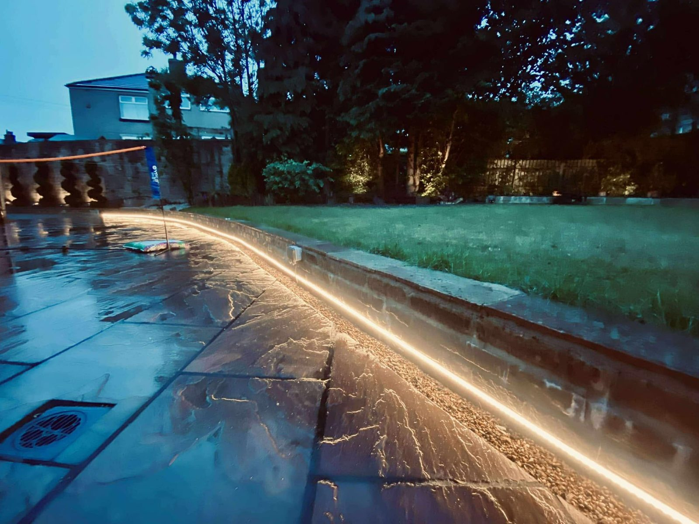
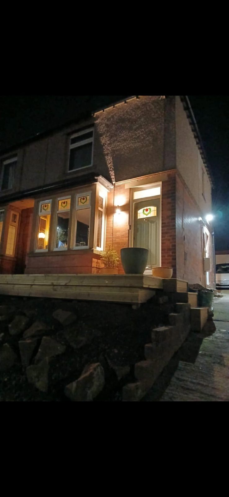

(06) · Our services
Outdoor Power & Lighting
Garden lighting, driveway lighting, exterior sockets and power supplies for garages, sheds and outdoor equipment.
Think in zones
Light where you move. Power where you use it.

A better final result
Plan fittings, cable routes and controls together.
Outdoor electrics need suitable equipment and a safe supply, but the visual result also matters. Positioning, glare, switching and how cables are concealed should be considered before installation.
- Weather-suitable equipment
- Appropriate electrical protection
- Neat and protected cable routes
- Convenient switching or control

Outdoor electrical work
- 01Outdoor sockets
- 02Garden and patio lighting
- 03Driveway and security lighting
- 04Garage and shed supplies
- 05Hot tub and fixed equipment supplies
- 06Fault finding on existing outdoor circuits
Outside changes everything
Water, exposure and physical damage all affect the design.
Products and installation methods must suit the location. An assessment establishes the supply route, protection, earthing arrangements and expected electrical load.
Common questions
Outdoor electrical FAQs.
Can normal indoor fittings be used outside?
Outdoor electrical products need to be suitable for the location and level of exposure. The correct equipment and installation method are selected for safety and durability.
Can you install outdoor sockets?
Yes. Outdoor sockets can be installed for garden equipment and general use, subject to a suitable supply route and electrical protection.
Do you install driveway and garden lighting?
Yes. Lighting can be planned for entrances, paths, driveways, patios, seating areas, outbuildings and security purposes.
Can power be supplied to a garage or shed?
Yes, where a safe and suitable design can be achieved. The route, cable protection, loading and earthing arrangements need to be assessed.
Planning an outdoor project?